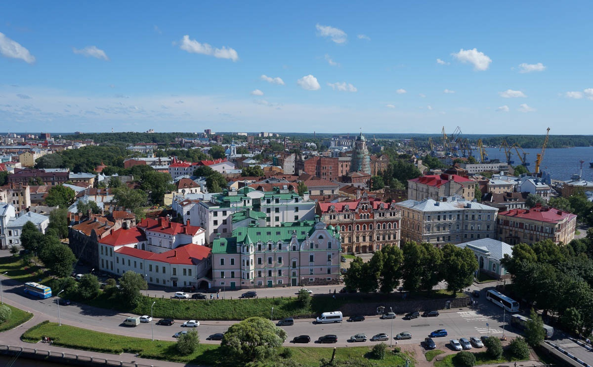
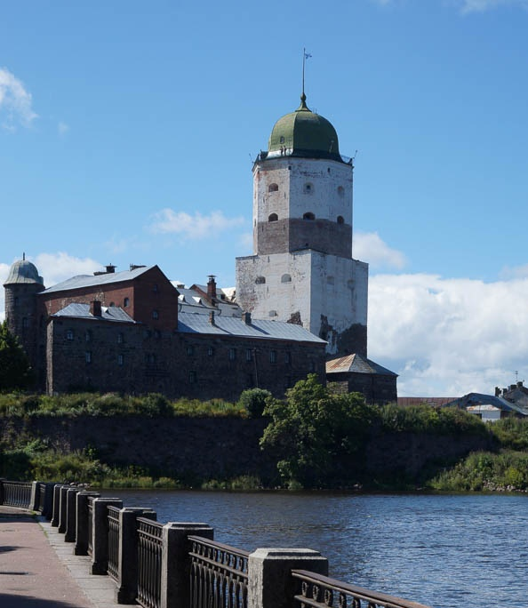
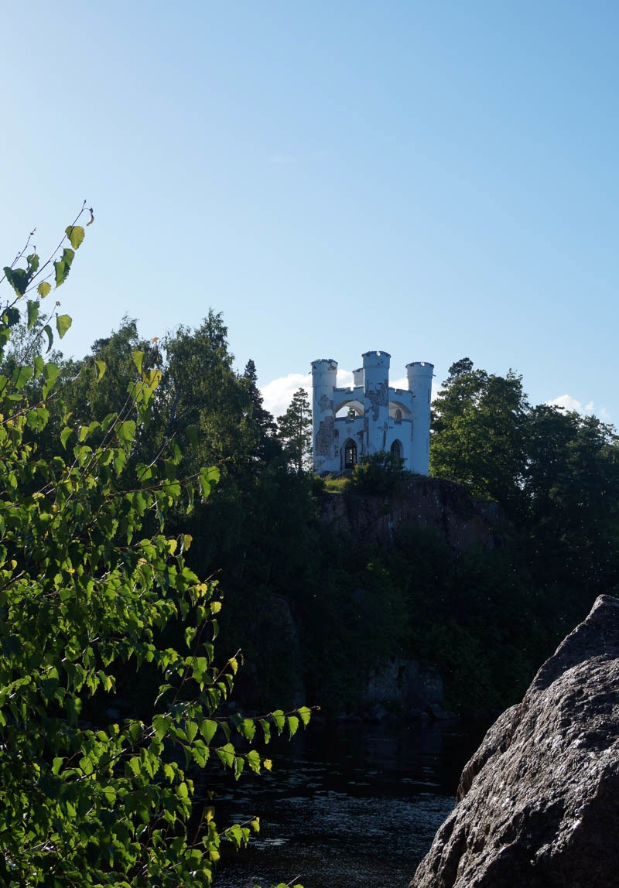
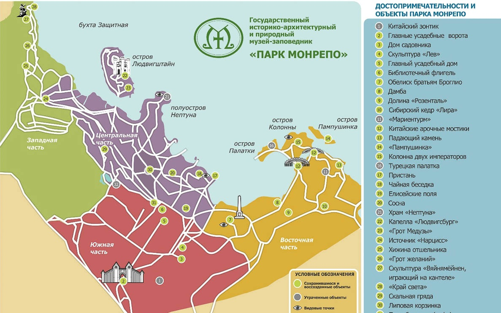
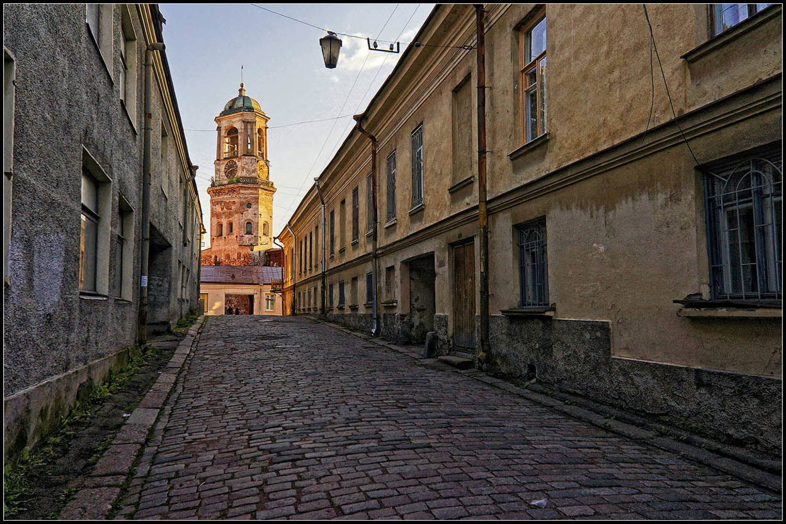
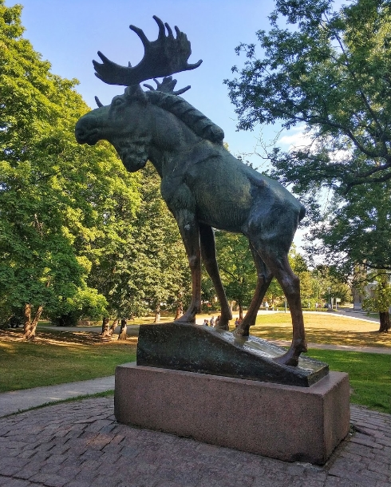

Мини-экскурсия по Выборгу
Выборг

Выборг — один из самых красивых городов России с многовековой историей, на архитектурный облик которого оказала большое влияние европейская культура: улицы и площади исторического центра города сохранили аутентичный антураж минувших столетий. История города началась в далеком XIII веке: шведы во время одного из Крестовых походов разорили поселение карелов на этом месте и возвели замок под названием «Выборг», что переводится как «Святая крепость». В ходе нашей экскурсии вы узнаете массу интересных исторических фактов об этой земле и увидите отпечаток истории в удивительной архитектуре древнего города.
Наверх
Башня

Выборгский замок — ценный архитектурно-исторический памятник, уголок с атмосферой Средневековья на территории Ленинградской области, который мы с вами увидим. Будучи созданным в конце XIII столетия, замок является одним из немногих памятников западноевропейского военного зодчества в России. Это настоящая визитная карточка Выборга, куда каждый год приезжают сотни туристов, чтобы ознакомиться с необыкновенными экспозициями, а также поучаствовать в тематических турнирах и фестивалях.
Наверх
Остров мертвых

Скалистый остров-некрополь в бухте Защитной Выборгского залива, в северной части выборгского парка Монрепо. Летом, добраться до острова Людвигштайн можно перейдя водную гладь вброд, благо максимальная глубина будет по пояс.
Наверх
Схема парка Монрепо

Скальный пейзажный парк на берегу бухты Защитной Выборгского залива, на острове Твердыш в северной части города Выборга. Официальное наименование — Государственный историко-архитектурный и природный музей-заповедник «Парк Монрепо».
С середины 2017 года ведётся реставрация парка в рамках совместной программы Международного банка реконструкции и развития и Министерства культуры РФ «Сохранение и использование культурного наследия в России». Планом предусмотрено восстановление усадебного дома и библиотечного флигеля, а также исторической части парка в 30 гектаров.
Наверх
Узенькая улочка

Чтобы окончательно погрузиться в атмосферу Средневековья, после посещения Выборгского замка, стоит отправиться на прогулку по Старому городу Выборга и посмотреть на его старинные улочки и постройки. Благодаря географическому положению города многие улочки в Выборге нисходящие. В сочетании с узостью и брусчаткой на авто здесь передвигаться не очень удобно.
Наверх
Памятник Лосю в Выборге

Памятник стал популярной городской достопримечательностью, его изображения можно увидеть на открытках, значках и другой туристической продукции. В зимний период у горка со статуей с давних пор стала излюбленным местом для катания детей по льду со склонов: об этом говорят и многочисленные воспоминания представителей финского населения, эвакуированного из Выборга в результате советско-финских войн. Внутри скульптура полая, в её основе металлический каркас.
Наверх